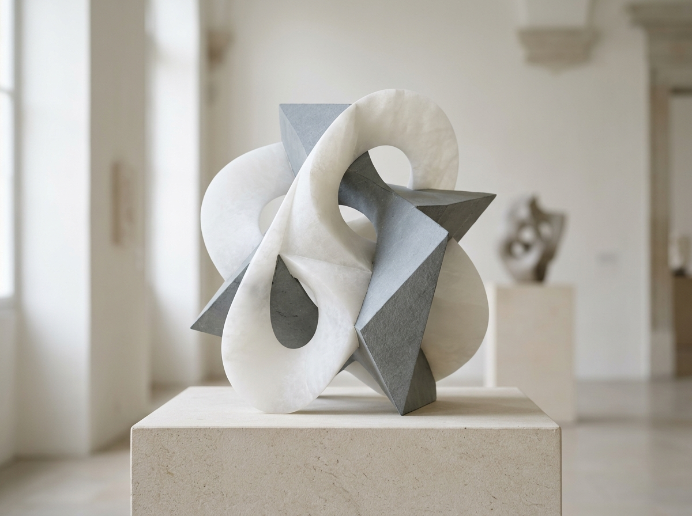

Mathematics·Published 2026-10-27·1 min read·17 equations
Kan Extensions as Universal Approximations in Monoidal Categories
Dr. Kenji Takahashi
Kyoto Research Institute for Mathematical Sciences
Abstract
A structural exposition showing how left and right Kan extensions unify sheafification, Fourier-like integral transforms, and enriched profunctor composition.

Plate 3. Alabaster and slate manifold model illustrating intersecting fiber bundles.
1. Universal Property of Left Kan Extensions
Given functors F:C→E and K:C→D, a left Kan extension of F along K is a functor LanKF:D→E equipped with a natural transformation η:F⇒(LanKF)∘K satisfying the universal bijection:
Nat(LanKF,G)≅Nat(F,G∘K)
for every functor G:D→E.
2. Pointwise Formula via Coends
When E is cocomplete and C is small, LanKF can be computed pointwise as a coend weighted by the hom-bifunctor in D:
(LanKF)(d)≅∫c∈CD(Kc,d)⋅Fc
Adjunctions as Kan Extensions
Every adjunction L⊣R arises as a Kan extension of the identity functor: specifically, L≅LanR(idC) whenever the unit η:idC⇒RL is preserved by L.
Cite This Monograph
@article{takahashi2026kan,
title={Kan Extensions as Universal Approximations in Monoidal Categories},
author={Dr. Kenji Takahashi},
journal={AmplitudeLand Scientific Journal},
year={2026},
url={https://Mostafa-gh-phys.github.io/amplitudeland-/posts/kan-extensions-monoidal-categories/},
doi={10.48550/ax.2026.0081}
}